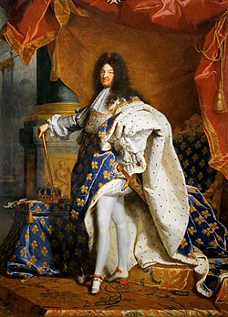

El Rococó no surgió por casualidad, sino como un suspiro de alivio. Tras la muerte de Luis XIV en 1715, el "Rey Sol" que había mantenido a Francia bajo un estilo artístico imponente, rígido y abrumador, la aristocracia francesa decidió que era momento de relajarse.
El epicentro de este cambio fue París. Los nobles abandonaron la fastuosa pero fría corte de Versalles para instalarse en sus nuevos hôtels particuliers (mansiones urbanas). En estos espacios más pequeños y privados, el arte ya no necesitaba impresionar a las masas, sino deleitar a los invitados.
Así, entre 1730 y 1760, el estilo alcanzó su máximo esplendor. Fue una transición de lo "masculino y heroico" del Barroco hacia lo "femenino y delicado". Se pasó de los techos cargados de batallas a paredes decoradas con conchas, flores y curvas asimétricas.
